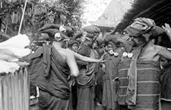
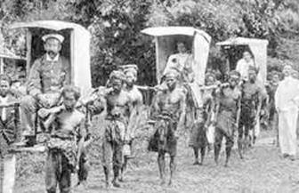
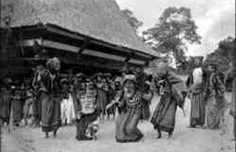
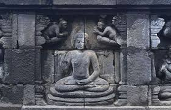

Pemerintahan tradisional Suku Karo, yang dikenal sebagai "Sibayak", meliputi kerajaan-kerajaan seperti Sibayak Kutabuluh, Sibayak Barusjahe, Sibayak Lingga, Sibayak Sarinembah, dan Sibayak Suka, yang masing-masing menjadi asal mula marga tertentu.

Asal-usul Karo
Asal usul suku Karo mencerminkan perjalanan panjang yang dipenuhi dengan dinamika sosial, budaya, dan sejarah. Masyarakat Karo terus berusaha menjaga identitas dan warisan budaya mereka di tengah perubahan zaman.

Pengaruh Kolonialisme
Kolonialisme, terutama oleh Belanda, memberikan dampak signifikan pada budaya Karo. Penjajahan ini menyebabkan perubahan dalam struktur sosial, ekonomi, dan budaya, termasuk pengaruh terhadap sistem pemerintahan tradisional dan interaksi dengan budaya lain, yang mengakibatkan akulturasi dan perubahan dalam adat istiadat masyarakat Karo.

Perkembangan agama dan kepercayaan
Perkembangan agama dan kepercayaan di Suku Karo, yang dulunya dikenal dengan "Pemena" (kepercayaan pertama), dipengaruhi oleh animisme dan dinamisme, kemudian mengalami evolusi dengan masuknya agama Hindu, Islam, dan Kristen, serta mengakibatkan adanya pemeluk Hindu Dharma Karo dan Kristen Protestan.

Pengaruh Hindhu-Budha pada Karo
Pengaruh dalam seni rupa, seni pahat, dan seni ukir, serta sistem kepercayaan yang memadukan unsur Hindu-Budha dengan kepercayaan lokal.
Hubungan dengan Kerajaan Aru dan Sriwijaya
Memiliki hubungan yang kompleks dengan Sriwijaya, termasuk sebagai pelabuhan yang berkembang setelah keruntuhan Sriwijaya dan sebagai negara yang rakyatnya kemudian dikenal sebagai perompak.


 hellowebpemai@gmail.com
hellowebpemai@gmail.com  Riverside Building, County Hall, London SE1 7PB, United Kingdom
Riverside Building, County Hall, London SE1 7PB, United Kingdom  +02 5421234560
+02 5421234560